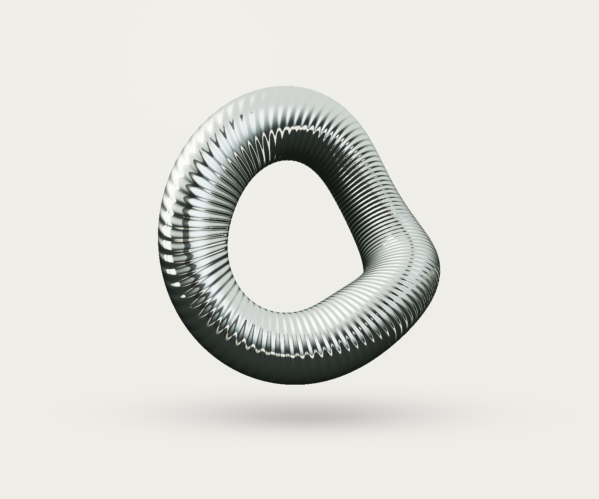

Form,
without
limits.
Some ideas deserve more
than a flat screen.
Continuum
ONE SURFACE. ENDLESS POSSIBILITY.
DRAG TO FIND YOUR PERSPECTIVE
PREPARING THE LIGHT
A little less ordinary.
A lot more feeling.
Not just something to look at.
Something to move, to explore,
to see differently every time.
Objects of
possibility.
Three forms. A thousand perspectives.
Choose an object and make the light your own.
Precision.
With a little
unpredictability.
The geometry is calculated.
The feeling is the part that matters.
Start with a silhouette.
Before texture, before effects.
An object that holds your attention
even when the lights are quiet.
Let the surface speak.
Broad reflections. Fine ridges.
A balance of warmth and shadow
that reveals every change in form.
Make curiosity tangible.
Turn it. Change it. Pause it.
The image is a starting point.
Your perspective completes it.
AUREL is a working demonstration of Maharajahul Design.
Explore the skill, the recipes, and the thinking behind the pixels.